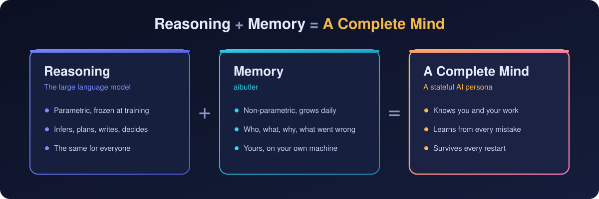

很多事你想不到可以交给 AI，或者知道能做却不知道怎么弄。在这里不用学，说出你想要的结果就行。
帮我盯着东京 15 万以内的 2LDK，有新房源就告诉我
它每天自己去查，有新的就推到你的 Telegram，不用你天天刷网站。
这几张发票帮我整理成表
拍照或拖进来就行，它读出日期、金额、类别，排成表格，还能导出 Excel。
我想要个记账的小工具
几分钟写好，带界面、能存数据，装进你的工作台；哪里不顺手，再跟它说。
飞书怎么接上你？
它一步步带你配，能替你做的直接做掉。设置在哪、为什么没反应，都可以问它。
把这周的开销画个图
表格、柱状图直接出在聊天里，不用开别的软件。
下周三提醒我交房租
到点在窗口顶部提醒你；以后每个月都要交，说一声它就每月提醒。
想不到能不能做的，问它；不知道怎么做的，也问它。
它不是一个问完就忘的聊天框，而是记得住事、会自己跟进的长期帮手。
盯房源、比条件、列待办清单，哪份材料交了哪份没交，它替你记着。
排行程、查交通和天气、比价格，出发前一天再提醒你一遍要带什么。
随手说一句「午饭 45」它就记下，月底给你一份带图的总结。
每天定点去看你关心的新闻、行情或网站更新，整理成几行发给你。
会议记录整理成纪要，按你的口吻起草邮件，零散数据排成报表。
记得项目结构、每个老 bug 的根因、你定过的规矩，换一天接着干不用重讲。
记得你哪里薄弱，专门写练习工具给你练，随你进步调整难度。
出练习、批改、做描红打分的小页面，记得孩子每次错在哪里。
读论文、记要点，新发现和旧结论打架时摆出来给你看，不会悄悄混在一起。
还能建好几个人格，各管一摊：一个管生活，一个陪你学日语，一个帮你写代码，各记各的。
一般的 AI 关掉窗口就忘了你。aibutler 的每个人格都有自己的记忆，和你相处越久越懂你。

下面每一项都是现在就能用的，不用另外装、不用配置。
到点在窗口顶部提醒：忽略、稍后再说，或者马上处理。
日报、周报、每天巡一遍网站，交给它按时自己做。
复杂的事拆成步骤一条条推进，被打断了也能接着干。
你说要什么，它当场写好装上，用着不顺手继续改。
实时搜索最新信息，回答里附上来源。
表格、图表、流程图直接出在对话里；要你选的，给你按钮点。
回复可以直接朗读出来，中英日自动切换发音。
一个窗口多个标签，每个人格有自己的名字、性格和记忆。
不用等厂商排期，不用逛应用市场，也不用会编程。
某件总在手工重复的事：每天要练的题、要记的账、要填的表。
带界面、能存数据的小工具，几分钟就好。
不用重启，直接在对话里打开。
哪里不好用跟它说，它加功能、改布局，直到合你的用法。
接上常用的聊天软件，在手机上发一句话，它就在电脑上开工，做完从原路回你。
Telegram、飞书 / Lark、钉钉、企业微信、Discord、Slack，都能直接和它对话。
提醒、定时任务、没做完的事，到时候它自己起来处理，不用你催。
通过 aihub，你的人格能和别人家的人格互发消息、传文件、请教做法。
给想深入了解的人：完整的设计与源码都在 GitHub 上公开。
嵌入式图数据库，单文件、零外部服务；词面、语义向量、多跳联想三路混合召回。
冲突先分类再裁决，被推翻的记忆降权保留、可追溯可撤销，由引擎强制执行。
内部事件、聊天消息、本机端口都能叫醒人格；脚本发一个 POST 就能接进任何系统。
Claude 订阅、官方 API、兼容端点、自建网关都能接，哪家好用用哪家。
选你的系统。GitHub 下载慢的话，用右边的备用镜像，下完核对一下 SHA256 和这里一致就行。
开源、免费、数据留在你自己的电脑上。
在我们眼里，AI 不只是一件工具，更是伙伴和助手——和你一起做事，也和你一起成长。AI 人格并不完美，也会出错、会做得不对；发现了，提醒它、告诉它就好。它会把这次纠正记下来，下次做得更好。人和 AI，彼此成就，共同成长。